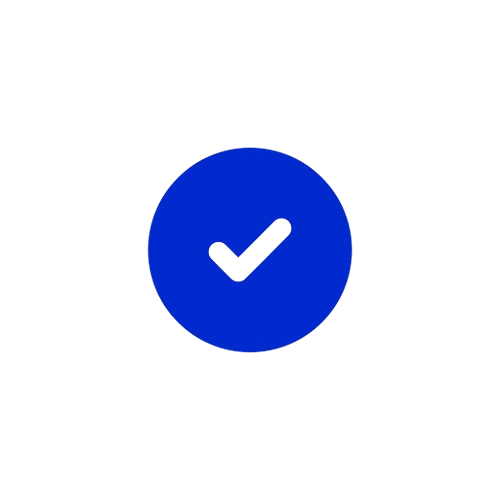

<ion-header>
  <div class="flex text-white h-10 py-2 text-xl font-bold bg-[#494a4e]">
    <i class="fas fa-arrow-left ml-3 text-[#ca9631]" routerLink="/home"></i>
    <div class="ml-[32%]">Archives</div>
  </div>
</ion-header>
<ion-content [fullscreen]="true">

<div class="mb-6">
<div *ngIf="doneIcon" class="z-20 relative">
  
</div>

<div *ngFor="let publication of publications" class="h-auto bg-[#494a4e] w-[97%] ml-auto mr-auto mt-4 rounded-md">
  <div class="h-10  bg-[#494a4e] rounded-md ">
    <h2 class="text-center font-bold py-2 text-white">Horoscope {{formatDate(publication.date)}}</h2>
  </div>

  <div class="w-full bg-white">
    <p class="mr-2 ml-2 text-black py-3">{{truncateText(publication[sign], 130)}}</p>
  </div>

  <div class="fixed inset-0 z-20 flex items-center justify-center mb-96 text-white" *ngIf="showModal">
    <div class="bg-[#494a4e] bg-opacity-50 border border-[#ca9631] rounded">
      <div class="bg-[#494a4e] p-4 rounded">
        <p>Ecrivez quelque chose</p>
      </div>
    </div>
  </div>

  <div class="h-14 border-t border-stone-200">
    <div class="flex mt-1.5 py-0.5">

      <i [routerLink]="['/comment', publication._id, publication.date]" class="fas fa-comments text-2xl py-2 text-[#ca9631] ml-auto mr-4"
        ></i>
    </div>
  </div>
</div>
</div>

</ion-content>
